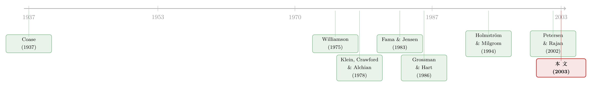

银行的边界，画在「谁说了算」这条线上
本文读的是 Brickley, Linck & Smith (2003, Journal of Financial Economics)：用 1998 年德州商业银行的数据，他们检验了一个看似抽象的命题——「资产所有权」与「决策权」是互补品。结论是，在越需要把决策权下放给本地经理的地方（小城与乡村、不透明的小企业贷款），银行的网点就越可能由本地拥有的小银行持有；而在大城市，网点几乎都属于异地的大型上市银行。一句话：银行的边界，不是被技术画出来的，而是被「谁该说了算」画出来的。
1 一个被反复念叨、却很少被「看见」的命题
公司金融里有一句话，几乎是被当成常识来念的：资产所有权和决策权是互补的 (complements)。
它的逻辑听上去很顺。一个人如果拥有一项资产，那么把更多的决策权交给他，代理成本就低——因为他在替自己花钱；反过来，如果你必须把大量决策权交给一个人，那最好让他也持有这项资产，否则他做决定时不会替你着想。所有权降低了授权的成本，授权又抬高了给所有权的收益。两者像一对咬合的齿轮。
这句话出自 Fama and Jensen (1983)、Holmström and Milgrom (1991, 1994) 这些组织经济学的经典。问题是——它太「对」了，对到几乎无法证伪。你怎么去「看见」它？在大多数行业里，决策权是一团说不清的雾：谁能批多大的单、谁要请示总部、本地经理到底有多少自由裁量，外人根本观察不到。而所有权结构、资产专用性、产品线又彼此纠缠，你很难把「互补性」从一堆混杂的因素里干净地剥出来。
于是这篇论文做了一件聪明的事：它没有去证明这句话，而是去找一个能让这句话显形的行业。
那个行业，是银行。
2 为什么偏偏是银行？
要理解这篇文章的巧思，得先回到更早的一场争论：企业的边界 (boundaries of the firm) 到底由什么决定？
主流答案来自 Williamson (1975, 1985) 和 Klein, Crawford and Alchian (1978)：资产专用性 (asset specificity)。如果两项资产高度专用、彼此「锁定」，那把它们放进同一家公司（纵向一体化）就能省下讨价还价的麻烦。过去几十年大量实证——从航天零件 (Masten, 1984) 到汽车 (Monteverde and Teece, 1982) 到航空发动机采购 (Crocker and Reynolds, 1993)——都在围着「专用性」转。
但银行业有个奇妙的性质：它的物理资产几乎不专用。一栋支行的楼、一排柜台、一台 ATM，无论挂在大银行还是小银行名下，价值都差不多，而且各家网点之间的专用性差异也很小。这意味着——如果我们还观察到银行的「边界」千差万别（有的网点是大银行的分支，有的是独立小银行），那这个差异几乎不可能是资产专用性造成的。专用性这个变量被「关掉」了，舞台就腾给了别的力量：所有权激励与风险承担。
这正是一个干净实验的味道：当你想检验 B 的作用，最好找一个 A（在这里是资产专用性）天然不变的环境。银行恰好满足。
银行还有三个附带的好处：商业银行在纵向、横向一体化程度上差异巨大，所以「为什么有的整合、有的不整合」这道题有检验功效；监管强制银行披露大量别的行业从不披露的信息（网点位置、分项经营数据）；同一行业的大样本又自动控制掉了跨行业研究里那些防不胜防的遗漏变量。
这套「为什么是银行」的论证，和后来组织经济学里关于软信息与层级的研究是一脉相承的（关于大银行为什么天生不擅长处理本地软信息，可参见《大银行为什么不爱给小店放贷？——一个关于「软信息」的组织故事》）。
3 把「互补性」翻译成一个可检验的假说
现在，作者要把那句抽象的「所有权与决策权互补」落到可观测的地面上。这一步是全文的枢纽。
第一步，确立「谁有决策权」的事实。 沿用 Nakamura (1994) 对行业的描述：大银行的支行经理决策权很有限，要遵守标准化操作流程，复杂业务上交总部或区域中心的专家处理，并被远程监督；而小银行的本地经理决策权要宽得多——尤其是放贷。作者还先验证了所有权那一端：小银行的股权高度集中在本地经理和本地社区投资者手里，而大银行的支行经理对银行或支行几乎没有任何所有权。决策权高的地方所有权也高，决策权低的地方所有权也低——这本身就和「正相关」的预测一致。
第二步，也是真正关键的一步：决策权不是凭空给的，它取决于环境。互补性理论的第二个含义是——在那些「把决策权下放很重要」的环境里，代理人应当同时拥有更大的所有权和决策权。那么，什么环境最需要下放决策权？
作者给出两条理由，都指向小城与乡村：
- 在大城市，把复杂业务转给附近区域中心的专家很便宜；而在乡村，市场太小养不起专家，本地经理就得「一专多能」。专业化被市场规模限制住了。
- 乡村和小城的主要贷款客户，是没有审计财务报表的小企业。判断要不要放这笔贷款，靠的是本地经理对客户、社区、贷款用途的了解——这是不透明信息 (opaque information)，极难、极贵地传给一个远在天边的上级。
把两步接起来，就是论文的联合假说：
（1）在「需要给本地经理下放重大决策权」的环境里，网点会由小银行拥有；（2）小城与乡村比大城市更需要给本地经理下放决策权。
合并起来的可观测预测干净利落：一家网点由大银行拥有的概率，会随着区位从大城市移向乡村而显著下降。
这里还藏着一个反问，作者替读者问了：大银行难道不能在乡村也给本地经理放权吗？理论上能，但不划算——这些网点产出多维、远程监督成本高、量身定制的薪酬合约会在同一家大机构内部引发「影响成本 (influence costs)」（Milgrom, 1988）；加上乡村对庞大分支网络的需求低，用公开发行股票去融资建网点的优势也小。于是大银行主动选择不进来。
4 识别策略与数据
这篇论文的「识别」不是 DiD 或 IV 那种因果工具，而是一种横截面的、由理论结构约束的检验：把「大银行是否拥有该网点」这个二值变量，对区位（大城市 / 小城 / 乡村）以及一组市场与人口特征做回归，看系数的符号与显著性是否落在理论预测的方向上。
它对识别的核心防线，是把样本锁死在一个州。各州历史上的银行业法规天差地别，是组织形态最大的混杂源。作者因此选了德州：
- 德州是全美银行与银行网点数量最多的州，地域辽阔、人口构成在州内差异大——这都抬高了检验的功效；
- 德州在 1987 年放开了县内分支、1988 年放开了全州分支，所以大型分支体系和独立小银行同时合法存在，不存在「小银行只是历史管制残留」的问题；
- 为防结论被德州的历史管制驱动，作者用加州数据重做了一遍——加州从未禁止过全州分支。
数据：观测单位是银行网点 (bank office)；样本年份为 1998 年的德州（Sheshunoff 数据库），辅以 FDIC 的全国银行数据、达拉斯联储与 FDIC 提供的数据。银行按资产是否超过 10 亿美元分为大、小两类（用 5 亿美元为界结果相似），这是监管与既有文献的惯例。
要诚实地说：这是一个横截面相关性的检验，不是外生冲击下的因果识别。它的说服力来自「单州控制法规 + 理论给定符号方向 + 跨州复制」，而非一个干净的准实验。作者本人也很清楚这一点，后文我会再回到这里。
5 数据先讲了半个故事
在跑回归之前，几组描述性数字本身就很有说服力。
先看全国大势。1984 到 1999 年，FDIC 投保的商业银行数量从历史峰值 14,496 家跌了 41% 到 8,581 家；可同一时期，银行网点数却增加了 28.4%，从 56,295 个升到 72,265 个。银行在合并，网点却在变多——这本身就说明「组织形态」和「物理网点」是两件事。
再看小银行的韧性。1999 年，全美 60% 的银行资产不到 1 亿美元，95% 不到 10 亿美元；但 4.6% 的大银行却握着约 83% 的全部商业银行资产。大银行在「资产」上压倒性，小银行在「数量」上压倒性，两者长期共存。更关键的是，小银行不是历史的残骸：加州从不禁止分支，可 1999 年仍有 34% 的银行资产不足 1 亿美元；1999 年全美新发了 232 张银行牌照，德州就有 9 张。
最后是德州网点结构的稳定性。1998 年 Sheshunoff 报告 1,828 个网点由小银行持有，到 2001 年仍有 1,826 个——小银行持有的网点绝对数几乎没动；占比从 51% 降到 47%，只是因为全州网点总数在涨。换句话说，重组一直在发生，但小银行作为一种组织形态并没有被「消灭」。
6 主要结果：边界果然画在区位上
回到联合假说的核心预测。作者发现，与假说一致——
一家网点由大银行拥有的概率，随着区位从大城市移向乡村而显著下降。 德州六大城市（Austin、Dallas、El Paso、Fort Worth、Houston、San Antonio）的多数网点，都属于股权分散、公开上市、且总部多在州外的大银行的分支体系；小银行则在中小城市更常见，并在乡村占主导。小银行通常网点很少、集中在一个本地市场，股权几乎全部由本地经理和社区投资者持有。
这里我要做一个负责任的标注：论文提供的正文（本次可读到的部分）给出的是上述符号与显著性方向及大量描述统计，而具体的 probit/logit 回归系数表不在可引用的文本里。因此我只复述能被原文支撑的量级（如 41%、28.4%、83%、\(1\) 0 亿美元界限、1,828→1,826），而不杜撰任何一个回归系数或 t 值。
这个结果一旦成立，它顺手回答了两个更大的问题：
其一，差异化 (differentiation)。 自 Hotelling (1929) 起，经济学家就关心企业如何在地理、产品、策略上做选择，以及是趋向最大差异还是最小差异。过去的实证（Borenstein and Netz, 1999；Mazzeo, 2001；Stavins, 1995 等）多盯着需求、进入成本、竞争、运输成本。这篇论文添了一笔新的力量：组织考量本身就会催生差异化——为一类客户/区位量身打造的组织结构与策略，会削弱你服务另一类客户/区位的能力，于是企业各自分化。
其二，小银行会不会被「大到通吃」消灭？ 一种流行的担忧是：既然 Riegle–Neal 法案 (1994) 放松了跨州分支限制，规模经济迟早会让大型纵向一体化银行碾死社区小银行，进而减少对小企业的信贷供给。但作者搬出了 Coase (1937) 最初的洞见——生产技术不应当决定组织形态。没有契约成本的话，大银行能实现的任何规模经济，一群靠合约连在一起的独立小银行同样能实现。于是真正决定边界的不是技术，而是激励与契约成本。作者由此论证：晚近的跨州分支自由化，在可见的未来不太可能消灭小银行——这与 Calem (1994)、Nakamura (1994) 提出的「小银行在特定环境中具有比较优势」的观点一致，而本文进一步指出，这种优势的一个来源，正是小银行的本地所有权结构。
（关于分支管制放开的真实效应该如何干净地识别，是另一条独立的研究线，可参见《在地图上画一条线：跨州县界如何重估了「银行松绑」的真实效果》。）
7 文献脉络：从「专用性」到「激励系统」，再到一间德州支行
把这篇论文放进它的家谱里，故事会更清楚。
源头是 Coase (1937)：企业为什么存在？因为市场交易有成本。接着 Williamson (1975, 1985) 与 Klein, Crawford and Alchian (1978) 给出了「企业边界」的第一代答案——资产专用性，并催生了一整代围绕专用性的实证。
然后，一个自然的问题是：边界只由专用性决定吗？Grossman and Hart (1986)、Hart and Moore (1990) 把视角转向产权与剩余控制权；而 Fama and Jensen (1983) 与 Holmström and Milgrom (1991, 1994) 则把企业看成一个激励系统——所有权、决策权、薪酬、任务设计是一组互补的选择，要一起定。「所有权与决策权互补」这句话，正诞生于此。
但真正关键的一步在于：这句话长期缺乏一个能让它显形的实证场景。于是 Brickley, Linck and Smith (2003) 接住了它，把它带进银行业——一个资产专用性近乎为常数、因此能让「激励」单独说话的舞台。与此并行的，是一条银行业自身的线：Nakamura (1994) 与 Calem (1994) 主张小银行在处理不透明信息、服务小企业上有比较优势，Berger et al. (1995, 2001)、Petersen and Rajan (2002) 则在数据上刻画了小银行与小企业贷款的关系，以及信息技术可能如何改变这一切。本文把「组织/激励」这条线与「银行/小企业信贷」这条线焊在了一起。

8 评论与延伸（Q&A + 研究方向）
(a) 几个可能的疑问
Q：这和 Williamson 的资产专用性理论是对立的吗？
不是对立，是互补。作者并不否认专用性在别处重要，而是故意挑了一个专用性近乎不变的行业，好让所有权激励这个被长期掩盖的力量单独显形。可以说，这篇文章是在专用性「失语」的环境里，给组织边界的解释补上了第二条腿。
Q：横截面相关性凭什么叫「检验」？会不会只是反向因果或遗漏变量？
这是本文最该被追问的地方。它的防线是三重的：把样本锁在单一州以控制法规这一最大混杂源；让理论事先钉死系数的符号方向（区位越乡村，大银行持有概率越低），再看数据是否落在那个方向；最后用从未禁止分支的加州复制。但它终究不是外生冲击驱动的因果识别，「乡村→本地所有」与「本地所有→服务乡村」之间的箭头方向，严格说仍是开放的。
Q：那大银行为什么不干脆也在乡村给经理放权、把小银行的活儿抢了？
因为不划算。乡村网点产出多维、远程监督贵、量身定制的薪酬会在大机构内部引发「影响成本」(Milgrom, 1988)；加上乡村对庞大分支网络需求低，用上市股权融资建网点的优势也小。于是大银行理性地选择不进入，把这块市场让给本地所有的小银行。
Q：用 10 亿美元一刀切「大/小」，会不会太粗暴？
这是监管与既有文献的惯例，作者也报告了用 5 亿美元为界结果相似。更深的问题是「大小」其实是「所有权与决策权配置」的代理变量，而非概念本身；若能直接度量本地经理的实际放贷权限，检验会更锋利。
Q：结论能推广到银行以外的行业吗？
作者很坦诚：不能直接外推。银行的好处恰恰是受监管、强披露、专用性低，这既是识别的优势，也是外部效度的限制。要知道这套「所有权—决策权互补」在专用性高、监管松的行业里是否还成立，需要另找场景。
Q：信息技术进步会不会让这套逻辑过时？
这是悬在头顶的问号。Petersen and Rajan (2002) 认为信息技术正在降低传递本地软信息的成本——若真如此，大银行远程服务小企业的劣势会缩小，本文「小银行不会消失」的结论就会被侵蚀。本文写于 2003 年，这之后二十年的金融科技浪潮，正好是对它的一次大考。
(b) 几个可能的研究问题与提案
-
本地所有权与小企业信贷供给：一个分支放开的准实验。 【经济故事】本文主张小银行的本地所有权结构带来小企业信贷优势。若某州在某年放开跨州分支、引发大银行并购本地小银行，那「本地所有权」会外生地消失——之后当地小企业信贷是否萎缩？ 【可行性】中。需要 CRA 小企业贷款数据 + FDIC 网点/并购数据 + 州层面分支立法时点，用交错 DiD（注意近年对交错 DiD 偏误的警示，参见《当「更稳健」的设计悄悄把符号弄反了》）。难点是并购的内生选择。
-
金融科技是否抹平了「本地所有」的信息优势？ 【经济故事】若软信息可被算法化、远程传输，则本文机制的前提（不透明信息难传递）被削弱。可比较金融科技渗透高/低的地区，小银行的小企业信贷份额下降幅度。 【可行性】中。需 fintech 放贷数据 + 小企业信贷数据；识别靠宽带/平台进入的地理差异。
-
把「决策权」直接测出来，而非用「银行大小」代理。 【经济故事】本文的软肋是用大/小代理决策权配置。若能拿到银行内部的授信权限手册（本地经理可独立批多大的贷款），就能直接检验「所有权—决策权」的互补，而非间接推断。 【可行性】低到中。数据极难获取，可能需与个别银行合作或借监管检查档案。
-
外资银行进入与本地信息租金。 【经济故事】把「本地 vs 异地」推到极端——外资银行进入一个市场，本地银行的不透明信息优势会如何变化？这与外资持有人、信息不对称的文献天然衔接（参见《银行的「信息」，凭什么是一道护城河？》）。 【可行性】中。新兴市场外资银行进入数据较易得，识别靠进入时点与地区差异。
9 我的判断
这篇文章的贡献，不在某个惊艳的系数，而在视角：它把一句被念了二十年、却几乎无法证伪的组织经济学命题，搬进了一个能让它「显形」的实验室。挑银行，是因为银行的物理资产不专用——这一手「关掉混杂变量」的设计，本身就值得学。它把企业边界的解释从单一的「资产专用性」，扩展到「所有权激励 × 决策权 × 环境」的互补结构，并用它解释了大、小银行为何长期共存、以及为何分支自由化未必消灭社区银行。回到 Coase 那句老话——技术不决定组织形态，契约成本才决定——这篇论文是一个漂亮的脚注。
我对识别的担忧也很直接：它本质上是横截面相关性，靠「单州 + 理论定符号 + 跨州复制」来支撑，而非外生冲击。「乡村导致本地所有」还是「本地所有导致服务乡村」，箭头方向并未被钉死；用「银行大小」代理「决策权配置」也隔了一层。
后续我最想看到的，是两件事：一是把决策权真正测量出来（内部授信权限），让互补性检验从「间接推断」升级为「直接观测」；二是用分支放开或金融科技进入的准实验，检验当「本地所有权」被外生改变时，小企业信贷是否真的随之变化。二十年过去，金融科技既是对本文机制的最大威胁，也是给它做因果体检的最好工具。
参考文献
- Brickley, J. A., Linck, J. S., Smith, C. W. Jr. (2003). Boundaries of the firm: evidence from the banking industry. Journal of Financial Economics 70(3), 351–383.
- Calem, P. (1994). The impact of geographic deregulation on small banks. Federal Reserve Bank of Philadelphia Business Review Nov–Dec, 17–31.
- Coase, R. (1937). The nature of the firm. Economica 4, 386–405.
- Fama, E., Jensen, M. (1983). Separation of ownership and control. Journal of Law and Economics 26, 301–325.
- Grossman, S., Hart, O. (1986). The costs and benefits of ownership: a theory of lateral and vertical integration. Journal of Political Economy 94, 691–719.
- Hart, O., Moore, J. (1990). Property rights and the nature of the firm. Journal of Political Economy 98, 1119–1158.
- Holmström, B., Milgrom, P. (1991). Multitask principal-agent analysis: incentive contracts, asset ownership, and job design. Journal of Law, Economics and Organization 7, 24–52.
- Holmström, B., Milgrom, P. (1994). The firm as an incentive system. American Economic Review 84, 972–991.
- Hotelling, H. (1929). Stability and competition. The Economic Journal 39, 41–57.
- Klein, B., Crawford, R., Alchian, A. (1978). Vertical integration, appropriable rents, and the competitive contracting process. Journal of Law and Economics 21, 297–326.
- Milgrom, P. (1988). Employment contracts, influence activities, and efficient organization. Journal of Political Economy 96, 42–60.
- Nakamura, L. (1994). Small borrowers and the survival of the small bank: is mouse bank Mighty or Mickey? Federal Reserve Bank of Philadelphia Business Review Nov–Dec, 3–15.
- Petersen, M., Rajan, R. (2002). Does distance still matter? The information revolution in small business lending. The Journal of Finance 57(6), 2533–2570.
- Williamson, O. (1975). Markets and Hierarchies: Analysis and Antitrust Implications. The Free Press, New York.